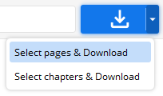
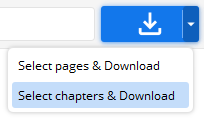

{head}
使用方法
{date}
支持的网站
https://github.com/KurtBestor/Hitomi-Downloader#supported-sites
地址栏
在地址栏输入一些URL，然后点击下载按钮进行下载
示例：
https://hitomi.la/galleries/123.html
https://hitomi.la/reader/123.html
https://e-hentai.org/g/123/356dfa74ce/
https://e-hentai.org/s/600e752112/123-4
https://hiyobi.me/reader/123
123
https://www.pixiv.net/users/11
https://www.pixiv.net/member_illust.php?id=11
https://pixiv.me/pixiv
pixiv_11
https://twitter.com/TensorFlow
@TensorFlow
https://www.instagram.com/user_name
insta_user_name
https://username.deviantart.com
deviant_username
多个URL的示例：
123, 125, 126
123 125 126
不在Hitomi.la中的数字会自动转换为E(x)Hentai URL。
保存
保存当前添加的偏好与任务。
文件 - 保存
[Ctrl + S] 键
搜索器
搜索画廊
菜单 - 搜索器...
[Ctrl + F] 键
下载任务
打开第一个文件：
鼠标右击 → [打开第一个文件]
点击缩略图
双击
[Enter] 键
移除多个任务：
选择多个任务 → [Del] 键
删除多个文件：
选择多个任务 → 鼠标右击 → [删除文件]
选择多个任务 → [Shift] + [Del] 键
移除所有完成的任务：
鼠标右击 → [移除所有完成的任务]
移除所有未加锁的完成任务。
任务颜色
浅灰色：等待或阅读
深灰色：正在下载
绿色：完全下载完成
橙色：部分下载完成
红色：失败或无效
改变任务顺序
使用鼠标滚轮拖放来改变顺序。
以下命令也有效：[Ctrl + ↑]，[Ctrl + ↓]，[Ctrl + Home]，[Ctrl + End]。
过滤任务列表
点击下载窗口左下角的过滤图标并输入。
只显示标题包含该词的任务。
您还可以按类型进行过滤，例如 "type:youtube"。
输入 "dup:"，只会看到重复的任务。
输入 "rem:"，只会看到从物理存储中删除的任务。
您可以按标签进行过滤，例如 "tag:glasses"。
你可以通过评论进行过滤，例如 "comment:xxxx"。
输入 "bad:"，只显示不完整的任务。
过滤搜索器搜索列表
点击搜索器左下角的过滤图标，并输入一些内容
您只会看到标题、作者、小组、标签和语言包含这些字符的画廊。
如果你输入 "title:A"，你只会看到含有字母A的标题的画廊。
你也可以通过 "artist:A"， "group:A"， "tag:A"， "lang:A" 等进行过滤。
输入 "p<100" 可以只查看少于100页的画廊。
输入 "p>100" 可以只查看超过100页的画廊。
输入 "done:o"，只能查看已经下载过的画廊。
输入 "done:x"，只能查看你还没有下载过的画廊。
选择页面&下载

只下载你指定的页面。
示例：
~ 100 → 前100页
-100 ~ → 最后100页
1, 10 ~ 20, -1 → 第一页，第10页到20页，最后一页
选择章节&下载

只下载选择的剧集。
偏好设置
选项 → 偏好设置
简单搜索 - 搜索关键词
像Google一样搜索。
例子 :
女仆
眼镜的韩国女仆
女仆 -学生妹
女仆 n/a
女仆 (韩国 + n/a)
高级检索 - 标题
例子 :
女仆
女仆 -学生妹
戴眼镜的女仆
高级搜索 - 艺术家
例子 :
关谷麻美
关谷麻美 + 雨泽鸦鹉
高级搜索 - 角色
例子 :
千石抚子
千石抚子 + 心叶理惠
日野香草, 心叶理惠
高级搜索 - 标签
例子 :
女性:女仆
女性:女仆, -女性:校服
搜索器列表
下载多个画廊 :
选择多个 → 右键 → [下载]
选择多个 → [Enter] 键
浏览画廊信息 :
右键 → 画廊信息...
点击缩略图
停止搜索
再次点击搜索按钮
更新搜索器搜索数据
搜索器 - 菜单 - 下载数据...
每次重新下载数据时，会从服务器获取最新数据。
脚本
工具 - 导入脚本...
执行Python脚本。
您可以编写您自己的下载脚本，添加更多等。
脚本文件 (*.hds) 可用文本编辑器（如Notepad）进行修改。
您也可以将脚本文件拖放到程序中运行。
在可执行路径中创建一个脚本文件夹，将您的脚本文件 (*.hds) 放在其中，它们将在启动时自动运行。
下载脚本：
https://github.com/KurtBestor/Hitomi-Downloader/wiki/Scripts
如何编写脚本：
https://github.com/KurtBestor/Hitomi-Downloader/wiki/How-to-write-a-script
绕过 DPI
选项 - 偏好设置 - 网络设置 - 绕过 DPI
使用
GoodbyeDPI
来阻止/绕过 DPI (深度数据包检查)。
加载 cookies
选项 - 偏好设置 - 网络设置 - Cookies - 加载...
可以加载从浏览器扩展程序导出的 Cookies。（Netscape HTTP Cookie 文件）
使用这些 Cookies，Hitomi Downloader 可以访问需要登录的页面。
Chrome 扩展：
Get cookies.txt LOCALLY
Firefox 扩展：
cookies.txt
Edge 扩展：
Get cookies.txt
过期的 Cookies 显示为灰色。
内置网络浏览器
选项 - 偏好设置 - 网络设置 - 内置网络浏览器 - 查看
用于阅读需要 JS 渲染的页面。
你可以用它来更新 cookies。
Chrome 扩展
Hitomi Downloader
功能：
下载需要扩展的网站
更新 Cookies
保存
保存 & 退出：
保存设置与当前添加的列表后退出
退出：
不保存退出
启动应用程序时，会以最近保存的状态开始。
快捷键
Alt + D ：地址栏 ↔ 切换任务列表
Ctrl + 1 ~ 7 ：在任务中设置标签
Ctrl + Tab ：显示/隐藏工具栏
Ctrl + - / + ：调整缩略图大小
Ctrl + 滚轮 ：调整缩略图大小
空格键 : 展开/折叠群组
反馈
https://github.com/KurtBestor/Hitomi-Downloader/issues
其他
请仅将下载的文件用于个人使用。
请在帮助 - 关于 - 底部按钮 中查找后续更新。